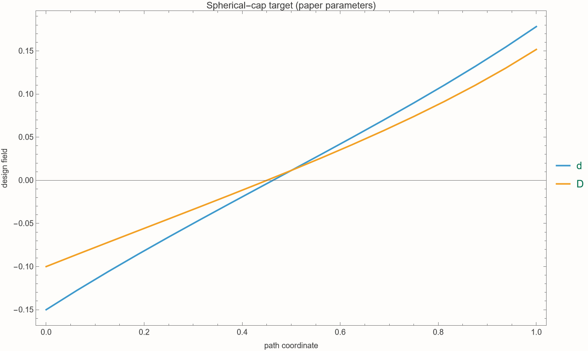
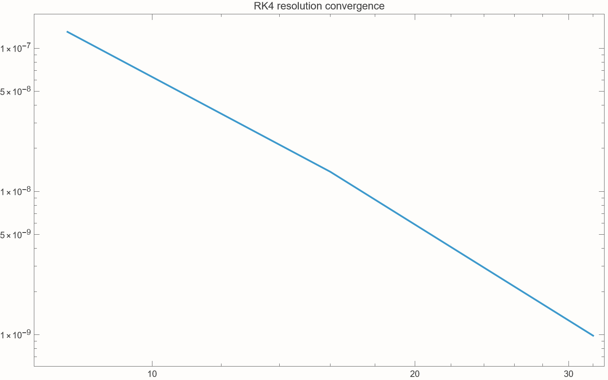
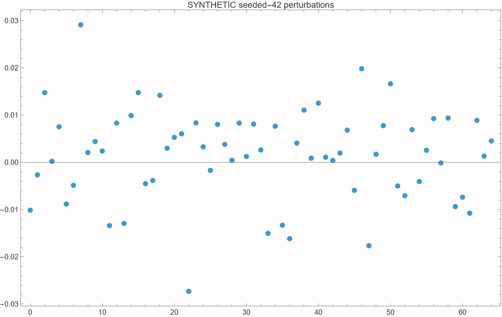

Continuum origami
inverse design
A technical verification companion to Sardas, Moshe & Maor, A continuum geometric approach for inverse design of origami structures, JMPS 196 (2025) 106003 · arXiv:2405.07249v2.
Scope: central continuum curvature and inverse laws—not full-paper verification, not every figure, and not a folded-geometry reproduction.
From a crease to a curvature—and back
01 · Discrete mechanism
Creases, vertices, sector angles, RFFQM compatibility.
02 · Continuum geometry
Surface map, metric, normal, curvature tensors.
03 · Inverse equations
Separated perturbation fields and RK4 integration.
04 · Evidence
Wolfram, Lean, C++, limitations and next tests.
Two reading levels run in parallel: definitions for newcomers; equation-level audit details for the authors.
The physical vocabulary
Facet / panel
A region of paper treated as rigid and planar. This model does not bend or stretch facets.
Crease
A hinge line shared by facets. Its fold angle γ measures relative panel rotation; zero convention depends on the paper.
Vertex
A meeting point of creases. A 4-vertex has four incident creases.
Sector angle θᵢ
The planar angle between neighboring crease rays before folding.
Mountain / valley (MV)
Opposite fold orientations, represented by the sign of γ under a chosen convention.
Activation angle ω
The single controlling fold angle: 0 flat, |ω| between 0 and π partially folded, |ω|=π fully folded.
What “inverse” means
Forward problem
Given microscopic angle/length perturbations, predict metric and curvature.
Inverse problem
Solve differential laws, sample the boundary, march the discrete mesh, then fold.
The scientific value is analytic visibility: feasibility can fail when a perturbation crosses its admissible domain, rather than only when a black-box optimizer stalls.
Generalized Miura-Ori as a constrained mesh
Miura-Ori: repeated parallelogram facets, one folding degree of freedom, flat-foldable.
GMO: nonuniform quadrilateral mesh.
RFFQM: rigidly and flat-foldable quadrilateral mesh; every facet stays rigid, and the compatible mesh follows one activation parameter.
Local rules determine the whole pattern
At one 4-vertex
Two adjacent sector angles determine the other two. Given one fold angle γ₁, Eq. 2–3 determine γ₂, γ₃=−γ₁, γ₄=γ₂, excluding the degenerate αᴸ+αᴿ=π branch.
Across one panel
Eqs. 4–6 impose angle compatibility; Eq. 7 propagates two known edge lengths to two unknown edges.
Failure modes: an angle leaves (0,π), |μ|=1 degenerates Eq. 5, or a propagated length is nonpositive. The present project does not implement this discrete marching/folding engine.
Scale separation turns cells into fields
x(j)=χj, y(i)=ξi
A unit cell is microscopic; the design envelope varies over the macroscopic unit square U=[0,1]².
Slowly varying means
Neighboring cells differ only slightly: the field’s variation wavelength is large relative to a cell. Finite differences can then approximate derivatives.
Limit order matters: χ,ξ→0 supports continuum fields; small amplitudes s,t support perturbation expansions. Neither is a proved error bound here.
A surface is a map, not just a picture
Tangent vectors Xₓ=∂X/∂x and Xᵧ=∂X/∂y span the local tangent plane.
The unit normal N fixes a local “up” direction; reversing it reverses signed principal curvatures.
CSS sketch: coordinate directions live on the surface; the normal points out of its tangent plane.
First and second fundamental forms
First form a: intrinsic distances
ds²=aₓₓdx²+2aₓᵧdxdy+aᵧᵧdy²
Measures lengths and angles inside the surface. A plane and cylinder can share a metric.
Second form b: bending
Measures how the normal changes. Together, compatible a and b determine local shape up to rigid motion.
Shape operator and principal curvatures
The shape operator converts a tangent direction into the normal’s rate of change.
Its eigenvectors are principal directions; eigenvalues κ₁,κ₂ are principal curvatures. Radius of curvature is |1/κ| when κ≠0.
Two scalar summaries
Mean: H = ½(κ₁+κ₂)
K>0 dome-like; K=0 locally developable; K<0 saddle-like. H distinguishes surfaces that share K.
Intrinsic metric constrains extrinsic bending
Gauss’s Theorema Egregium says K can be calculated from the metric and its derivatives alone—even though curvature appears to describe embedding in 3D.
Christoffel symbols Γ are combinations of a⁻¹ and first derivatives of a; they describe how coordinate basis vectors change. The paper uses this route for Eq. 31 and also obtains κₓ,κᵧ through b and C.
Two separated control fields
Angle channel
Signs alternate around neighboring vertices. d depends only on x and primarily controls κₓ.
Length channel
Modulates alternating vertical boundary lengths by 1+D. D depends only on y and primarily controls κᵧ.
The project absorbs the paper’s small amplitudes s,t into combined fields d,D. This is why executable derivatives d′,D′ already include those scale factors.
Admissibility is part of the mathematics
Exact paper range for the combined angular perturbation on every x∈[0,1]. It keeps sector angles valid.
Exact paper range for every y∈[0,1]. It keeps the scaled boundary length L(1+D) positive.
Sampled trajectory checks passed, but sampling is not a global proof. The discrete march can still produce a nonpositive interior crease length.
The paper’s multiscale construction
Boundary
d(x), D(y), θ, ω, C, L
Continuum fields
ℓ̃A, ℓ̃B, c̃L, c̃R, ω̃
Local geometry
a, b, C, κₓ, κᵧ, K
Inverse ODEs
d′=f(d;κₓ), D′=g(D;κᵧ)
Important audit boundary: this implementation executes the continuum/inverse segment. It does not reconstruct vertices in ℝ³, run exact discrete marching, fold panels, FEM-simulate, or compare pixels to paper figures.
Length fields (23–24) and fold field (28)
ℓ̃B = ξL·[1+D(y)]·R(x)
Eq. 24 differs from Eq. 23 exactly by 1+D. The audit checks this factor.
Principal branch; the audit checks ω̃(0)=ω₀. Eqs. 23,24,28 were closed-form implemented and spot-checked, not fully formally derived.
Eqs. 31, 33 and 34
Multiplying κₓκᵧ and simplifying trig factors reproduces Eq. 31. This is the strongest central symbolic identity in the audit.
Eqs. 37–38 retain state dependence
Here aₓ and aᵧ are the angle/length prefactors visible in Eqs. 38 and 37. The denominators change the required slope as the state evolves. Setting d,D→0 recovers the leading laws.
Paper ordering: Eq. 37 is the y-direction law and Eq. 38 the x-direction approximation. The local package names them by direction, not equation order.
Algebraic inversion produces two uncoupled ODEs
D′ = (κᵧ/aᵧ) bᵧ(D)³ᐟ²
Each curvature equation is linear in its derivative. Multiply by the positive denominator, then divide by a nonzero prefactor.
Why “uncoupled” matters
For separated targets κₓ(x),κᵧ(y), d evolves without D and D evolves without d. Two scalar initial-value problems replace a coupled surface optimization.
Existence and global continuation still require regularity and domain control; no convergence theorem is supplied.
RK4, explained without shorthand
For y′=f(y), step h, classical fourth-order Runge–Kutta samples four slopes:
k₂=f(yₙ+h k₁/2), k₃=f(yₙ+h k₂/2), k₄=f(yₙ+h k₃)
yₙ₊₁=yₙ+h(k₁+2k₂+2k₃+k₄)/6
The weighted average is locally accurate through h⁴ under smoothness assumptions. This project integrates the pair (d,D) on one normalized path with 16 steps. The refinement difference is empirical evidence, not proof of convergence for the origami model.
Reproduced deterministic trajectory

Locally generated Wolfram plot; deterministic paper-parameter output.
| Quantity | Value |
|---|---|
| target | κₓ=κᵧ=1 |
| cells / steps | Nₓ=Nᵧ=16 |
| size | C=1, L=2 |
| paper angles | θ=.45π, ω=.76π |
| initial state | d₀=−.15, D₀=−.1 |
| final (16-step) | d=0.1781684047 D=0.1516802587 |
Exact paper values are not rounded executable values
Paper transcription
θ=.45πω=.76π
Approximately 1.4137167 and 2.3876104 radians.
Official executable rounding
θ=1.40ω=2.4
Used only as a sensitivity comparison; not substituted for the paper’s exact parameter statement.
Final fields differ materially: paper values (0.1781684, 0.1516803) versus rounded values (0.1637172, 0.2184979). The official repositories were consulted for transcription/parameter cross-checks; no code was copied.
Close perturbations can yield different folded curvature
Leading linear prediction
D(y)=−.1 + 0.269383y
Reported slopes are retained as comparison evidence, not refitted claims.
Weakly nonlinear prediction
State-dependent b³ᐟ² changes slopes along the path. The paper reports ≈1 center / ≈0.9 edge curvature versus ≈0.6 edges for linear design.
Not reproduced here: those folded-surface curvature heatmaps.
All 42 displayed equations, grouped by role
The paper numbers 39 main-text equations plus three appendix equations—not Eqs. 40–42. Coverage means identified and classified, not that every equation was re-derived or verified.
Cross-language independence by construction
Paper
Immutable PDF + official repositories for cross-check only
Normalized claim ledger
Definitions, assumptions, equations, statuses
Wolfram
symbolic + high precision
Lean
exact finite algebra
C++
independent IEEE-double path
Agreement across separately encoded formulas reduces shared-implementation risk; it does not eliminate shared transcription error or prove model validity.
10 audits passed; 0 failed
- κₓκᵧ equals Eq. 31
- nonlinear inverse residual
- full sampled trajectory domain
- three angle-pair spot checks
- metric determinant
- zero derivatives → zero curvature
- Eq. 24 / Eq. 23 factor
- Eq. 28 initial condition
- Eqs. 23,24,28,31,33,34,37,38 in audit scope
Symbolic simplification, high-precision identities, numerical residuals, trajectory generation, deterministic plots and CSV export are the Mathematica/Wolfram roles.
What Lean proves—and explicitly does not
Machine-checked
- 2×2 diagonal determinant over integers
- alternating product rearrangement
- positive length in a restricted integer case
- abstract finite recurrence determinism
Lean 4.32.2: lake build passes; no sorry, admit, or declared axiom.
Not formally proved
- real trigonometric identities
- differentiation / ODE existence
- fundamental forms or curvature laws
- Eqs. 31,33,34,37,38
- floating-point RK4 correctness
- physical foldability or global compatibility
Independent floating-point implementation
Maximum absolute C++/Wolfram CSV difference.
1834.91 msLatest benchmark: 200,000 trajectories × 16 RK4 steps.
Reproducible compiler choice
−std=c++20 −O3 −march=native
GCC 15.2.0 was available but deliberately not selected, preserving one primary reproducible binary. Benchmark timing is machine-dependent evidence, not an algorithmic guarantee.
Refinement supports implementation consistency

Generated from deterministic 8/16/32/64-step trajectories.
Reported RK4 refinement difference in the validation record.
Final d values converge 0.1781683501 → 0.1781684075; final D values 0.1516803752 → 0.1516802450.
Seed-42 noise is diagnostic only

Wolfram NormalDistribution diagnostic, SeedRandom[42].
Not evidence for the paper
The noise dataset does not represent measurements, folds, fabrication tolerance, or uncertainty reported by the authors.
It exists only to exercise a deterministic data/plot pipeline. Spherical-cap CSVs are deterministic paper-parameter outputs and are not synthetic data.
A diagonal sensitivity Jacobian
∂D′/∂D = (κᵧ/aᵧ)(3/2)bᵧ¹ᐟ²[cos²θ + D sinθ Q/4]
∂d′/∂D = ∂D′/∂d = 0 (fixed separated targets)
This derived diagnostic quantifies local amplification: perturbing d changes only its own inverse slope, likewise D. Zero cross-terms follow from the separated model—not from arbitrary origami geometries.
Track distance to every failure surface
Domain margins
mD=1+D
Positive values remain inside Eq. 39.
Denominator margins
Keep the selected real branch well-defined and sensitivity finite.
Discrete margin
Not evaluated because the discrete marching engine is absent.
Recommended reporting: minimum margin over the whole solved interval, with event detection—not only a Boolean at sampled RK4 nodes.
What the evidence actually establishes
| Finding | Evidence | Status |
|---|---|---|
| Leading κ product matches Eq. 31 | Wolfram high-precision identity | Symbolic |
| Inverted nonlinear laws return target curvature | Wolfram + C++ residuals | Cross-checked |
| Two languages produce same trajectory | max |Δ|=5.55×10⁻¹⁷ | Cross-checked |
| Finite algebra helpers are exact | Lean build, no proof holes | Formally proved |
| Paper’s folded surface is recreated | No folding engine / geometry comparison | Not reproduced |
Points requiring careful interpretation
- Equation-order pitfall: Eq. 37 is κᵧ; Eq. 38 is κₓ. Internal API orders {κₓ,κᵧ}.
- Notation compression: executables absorb s,t into d=sδ̃ and D=tΔ̃; primes are derivatives of combined fields.
- Approximation asymmetry: the paper describes κᵧ as exact in the δ=0 cross-section, while κₓ remains approximate after neglecting a higher-order component.
- Angle values: .45π/.76π are paper values; 1.40/2.4 are rounded executable values.
- Eq. 22 status: its closed-form solutions are spot-checked, but the differential residual is not formally proved.
- Equation count: the paper has main-text Eqs. 1–39 and appendix Eqs. B.1, B.2, and C.1: 42 displayed equations in total.
Exact scope matrix
| Artifact / claim | Result |
|---|---|
| Eqs. 31,33,34 leading laws | reproduced / audited |
| Eqs. 37,38 nonlinear laws + inverse residual | implemented / cross-checked |
| Eqs. 23,24,28 closed forms | spot-checked |
| Spherical d,D trajectory at paper parameters | Wolfram ↔ C++ |
| Every equation / theorem / figure | not reproduced |
| Discrete marching + folding in 3D | absent |
| FEM / elasticity / fabrication | absent |
| Paper-figure pixel or curvature-map comparison | absent |
No theorem hides behind the plots
Mathematical
- No global surface compatibility proof
- No ODE existence/uniqueness or convergence theorem
- No rigorous χ,ξ,s,t error bounds
- Sampled feasibility ≠ interval proof
Computational / physical
- Normalized 1D integration path
- IEEE-double arithmetic not formally verified
- No discrete folding engine or FEM
- No collision, thickness, torque, elasticity, fabrication
- No pixel comparison to paper figures
Conclusion: a strong, independently executable audit of central formulas—not “full paper verification.”
Close the most consequential gaps first
- Interval/event-aware ODE solver: certify Eq. 39 and denominator margins over each step.
- Exact discrete march: reconstruct all sector angles and lengths; report the minimum positive-length margin.
- 3D rigid-folding engine: produce X(i,j), then independently compute a,b,K,H.
- Paper comparison: reproduce spherical curvature heatmaps and define numerical—not merely pixel—error metrics.
- Convergence study: vary Nₓ,Nᵧ and distinguish ODE integration error from continuum/discretization error.
- Lean expansion: formalize real-domain positivity, inversion lemmas, and the κₓκᵧ identity before tackling differential geometry.
Questions for the authors
Approximation
- What norm best measures continuum-to-discrete error?
- Can χ,ξ and s,t limits be coupled rigorously?
- Where does neglected κₓ transverse motion dominate?
Feasibility & uniqueness
- Can positive boundary margins ensure positive marched lengths?
- Which initial-data choices optimize feasibility margin?
- Can nonseparable targets be projected with controlled error?
Validation
- Are original numerical curvature arrays available?
- Which discrete derivative stencil generated Fig. 12?
- What tolerance defines an acceptable target match?
Mechanics
- How should hinge stiffness and facet compliance perturb the isometric family?
- Which collision/thickness constraints are first-order important?
Sources you can inspect
Paper and official context
Sardas, Moshe & Maor, JMPS 196 (2025) 106003
https://arxiv.org/abs/2405.07249v2
https://doi.org/10.1016/j.jmps.2024.106003
Author notebook (cross-check only):
https://github.com/AlonSardas/InverseDesignOriNotebook
Author implementation (cross-check only):
https://github.com/AlonSardas/RFFQMOrigami
Local reproducibility map
2405.07249v2.pdf · immutable sourcedocs/equation_ledger.md · normalized claimssrc/OrigamiGeometry.wl · Wolfram implementationlean/OrigamiProofs.lean · finite exact proofscpp/ · independent C++ tests/benchmarkexports/ · reports, CSVs, generated plotsdata_manifest.json · provenance
No official source code copied.